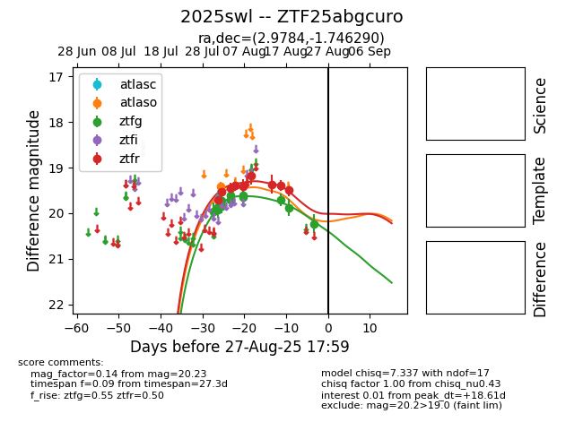

Target 2025swl at 2025-08-26 11:20, see:
FINK: fink-portal.org/ZTF25abgcuro
Lasair: lasair-ztf.lsst.ac.uk/objects/ZTF25abgcuro
ALeRCE: alerce.online/object/ZTF25abgcuro
TNS: wis-tns.org/object/2025swl
YSE: ziggy.ucolick.org/yse/transient_detail/2025swl
alt names
ZTF25abgcuro (ztf,fink)
2025swl (tns,yse)
coordinates:
equatorial (ra, dec) = (2.9784,-1.74629)
galactic (l, b) = (100.8072,-62.90775)
photometry
last atlaso=19.40, ztfg=20.23, ztfr=19.49
1 atlaso, 12 ztfg, 9 ztfr detections
